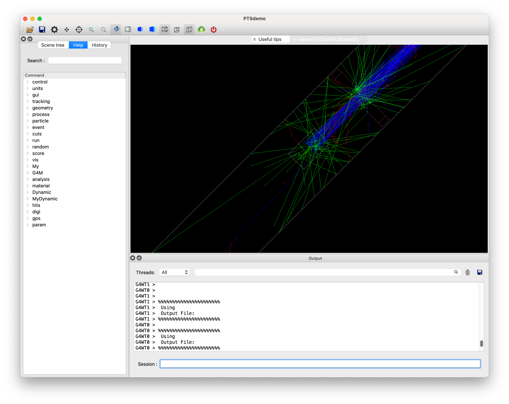
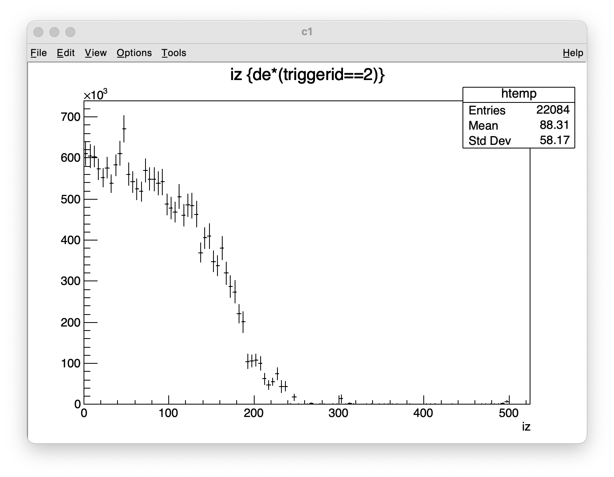
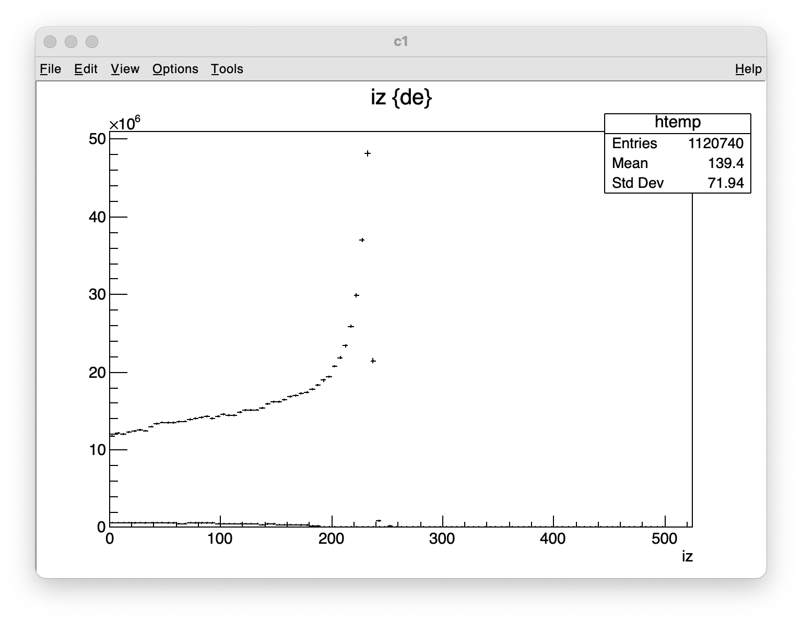

Example A9(TriggerSD）
TriggerSDを論理ボリュームに取り付けることにより、粒子がその論理ボリュームを通過した履歴をビット列で記録します。記録したビットは、スコアリングによりNtupleの情報として出力することが可能です。 ここでは、TriggerSDの使用方法を解説します。
論理ボリューム選択
TiggerSDの取付
トリガービットの利用例
以下、PTSIMの実行ディレクトリ(例: ~/PTSproject-install/PTSapps/DynamicPort)で作業します。
例題マクロファイル
PTSIMコードに付属するマクロファイルexampleA9.macをコピーして用います。
$ cp ./macros/tut/exampleA9.mac .
実行
$ ./bin/PTSdemo -i exampleA9.mac

陽子線を照射してみます。
Session: /run/beamOn 100

終了
Session: exit
マクロファイルの解説
解説するコマンド部分のみを抜粋して説明します。 マクロファイルでは、治療室にMLCと水ファントムを設置して、MLCにTriggerSDを取付ることにより、水ファントムの線量分布にMLCで散乱された粒子がどのように寄与しているかを確認する例を想定しています。MLCにかかるようにGPSの初期設定で、陽子線の拡がって照射されるような設定となっています。
1#
2# (PreInit State)
3/control/verbose 1
4#
5# Material
6/control/execute ./macros/common/materials.mac
7#
8# PhysicsList
9/control/execute ./macros/common/phys.mac
10#
11# System and module registration
12/G4M/System DynamicPort
13/Dynamic/Module/Room/register 525. 525. 3550. mm
14/Dynamic/Module/WaterPhantom/register Phantom
15/Dynamic/Module/register MLC G4MMLCX ./data/Sample/G4MMLCX/mlc.dat 0. 0. 1000. mm
16#
17#
18# Run Initialize
19/run/initialize
20#
21# (PreInit State)
22#
23# Primary particle
24/My/PrimaryGenerator/select GPS
25/gps/particle proton
26/gps/energy 190. MeV
27/gps/direction 0 0 -1
28/gps/pos/type Beam
29/gps/pos/sigma_x 30.0 mm
30/gps/pos/sigma_y 40.0 mm
31/gps/pos/centre 0. 0. 3500. mm
32/gps/ang/type beam2d
33/gps/ang/sigma_x 30.0 mrad
34/gps/ang/sigma_y 20.0 mrad
35#
36# WaterPhantom
37/G4M/Module/Phantom/size 150. 150. 250.0 mm
38/G4M/Module/Phantom/dim 300. 300. 500.
39/G4M/Module/select Phantom
40/G4M/Module/rotate 0. 180. 0. degree
41/G4M/Module/install Phantom
42#
43# MLC
44/G4M/Module/install MLC
45#
46# TriggerSD
47/G4M/Module/dumpLV MLC
48/G4M/Module/selectLV MLC 1
49/G4M/Module/attachTrgID 1
50#
51# Scoring
52/My/runaction/dumpfile A9.root
53/My/runaction/ntuple/merge true
54#
55# Track analysis
56/My/runaction/ntuple/create NT Phantom/HitsCollection
57/My/runaction/ntuple/addColumn NT evno I
58/My/runaction/ntuple/addColumn NT pid I
59/My/runaction/ntuple/addColumn NT ix I
60/My/runaction/ntuple/addColumn NT iy I
61/My/runaction/ntuple/addColumn NT iz I
62/My/runaction/ntuple/addColumn NT triggerid I
63/My/runaction/ntuple/addColumn NT triggerx F
64/My/runaction/ntuple/addColumn NT triggery F
65/My/runaction/ntuple/addColumn NT triggerz F
66/My/runaction/ntuple/addColumn NT de F keV
67/My/runaction/ntuple/showScColumn NT
68#
69# BeamOn
70#/run/beamOn 10000
71#
論理ボリュームの選択
TriggerSDを有効にする論理ボリュームを選択し、TriggerSDを取付ます。
はじめに論理ボリュームを選択します。モジュール内で論理ボリューム名が重複している場合、はじめにインタラクティブモードで実行して/G4M/Module/dumpLVコマンドを用いてモジュール内の論理ボリュームを調べて識別番号を確認し、/G4M/Module/selectLVコマンドでモジュール名と識別番号を指定して当該の論理ボリュームを選択する。
(補足)
はじめに/G4M/Module/dumpLVコマンでで論理ボリュームを調べるときには、/G4M/Module/selectLVコマンドと/G4M/Module/attachTrgIDコマンドは、コメントにして実行します。
標準出力の表示を確認して、論理ボリュームの識別番号を確認します。
その後に、/G4M/Module/selectLVコマンドと/G4M/Module/attachTrgIDコマンドを有効化して、論理ボリュームやトリガービットを指定して実行することになります。
MLCモジュールの内部構造を調べる。
Idle> /G4M/Module/dumpLV MLC
/G4M/Module/dumpLV MLCの表示は次のようになります。
/G4M/Module/dumpLV MLC
0 MLC : Air(1)
1 Iron : Iron(0)
上記の表示は、最初が論理ボリュームの識別番号、２番目が論理ボリューム名、コロンの後は物質名と括弧書きで子論理ボリュームの個数です。
モジュール名と識別番号により論理ボリュームを選択する。
Idle> /G4M/Module/selectLV MLC 1
TriggerSDを取付ける
取付ける際に、通過した際に立てるビット番号を指定する。
Idle> /G4M/Module/attachTrgID 1
ビット番号nであれば、ビットが立った時の10進数での値は2^nである。 つまり、ビット番号が１の場合は、10進数では2となる。
スコアリング
粒子情報は、スコ量triggeridに記録されている。また、ボリュームを通過した最終座標がtriggerx, triggery,triggerzに記録されている。水ファントムでの線量とTriggerSDの情報をNtupleで保存する場合の例は、次のようなる。
/My/runaction/ntuple/create NT Phantom/HitsCollection
/My/runaction/ntuple/addColumn NT evno I
/My/runaction/ntuple/addColumn NT pid I
/My/runaction/ntuple/addColumn NT ix I
/My/runaction/ntuple/addColumn NT iy I
/My/runaction/ntuple/addColumn NT iz I
/My/runaction/ntuple/addColumn NT triggerid I
/My/runaction/ntuple/addColumn NT triggerx F
/My/runaction/ntuple/addColumn NT triggery F
/My/runaction/ntuple/addColumn NT triggerz F
/My/runaction/ntuple/addColumn NT de F keV
/My/runaction/ntuple/showScColumn NT
実行と解析例
照射数を10000にして実行してみましょう。マクロファイルの/run/beamOnを有効にして照射数を10000に修正した後に実行してみましょう。
$ ./bin/PTSdemo -m exampleA9.mac
実行後に、A9.rootが作成されているので、解析してみましょう。
MLCでの散乱放射線による深度エネルギー付与分布を見て見ましょう。
$ root A9.root
root[] .ls
root[] NT->Print()
root[] NT->Draw("iz","de*(triggerid==2)")
root[] NT->Draw("iz","de")
root[] NT->Draw("iz","de*(triggerid==2)","same")
root[] NT->Draw("trigerx:triggery:triggerz","triggerid==2")
MLCで散乱された粒子による水ファントム内の深度エネルギー付与分布
NT->Draw("iz","de*(triggerid==2)")

水ファントム内の全深度エネルギー付与分布とMLC散乱粒子の分布の重ね書き
NT->Draw("iz","de")及びNT->Draw("iz","de*(triggerid==2)","same")の描画

MLCでの散乱位置
NT->Draw("trigerx:triggery:triggerz","triggerid==2")の描画

以上